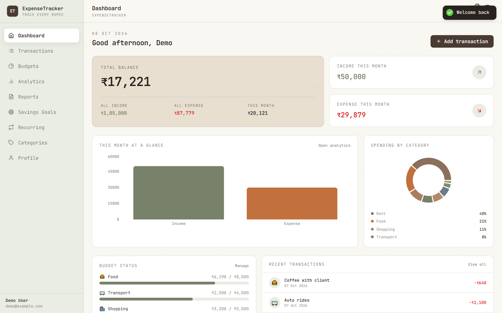
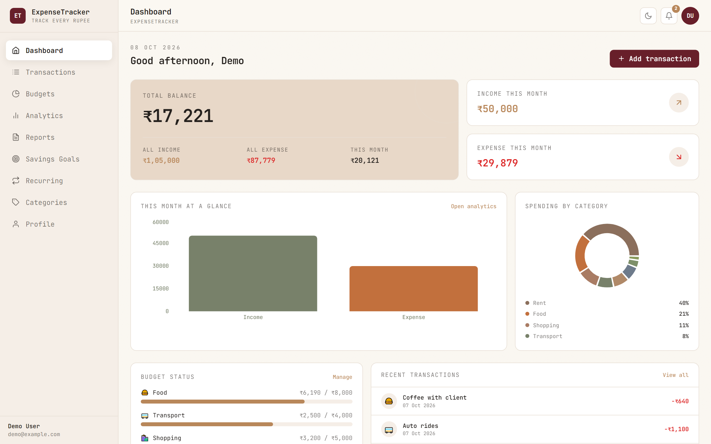
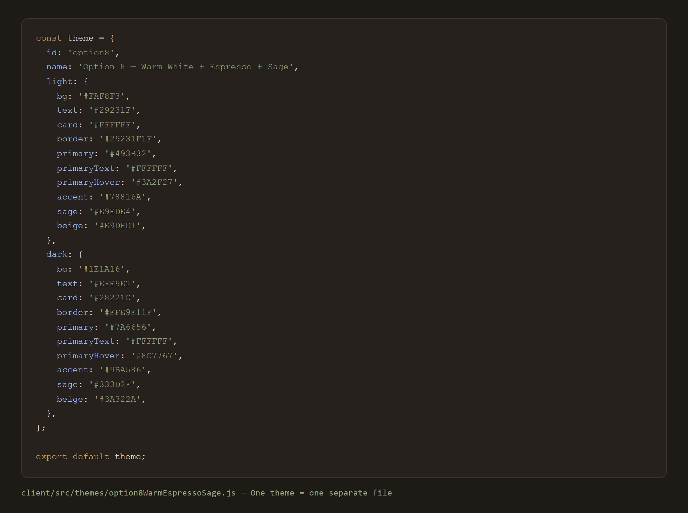

in partial fulfilment of the requirements for the degree of Bachelor of Engineering in Computer Science & Engineering
Gujarat Technological University Academic Year 2025 – 2026
Project Guide
____________________ (Guide Name)
Head of Department
____________________
Institute
Laxmi Institute of Technology, Sarigam
Report Date
08 October 2026
Certificate
This is to certify that the project entitled "ExpenseTracker — A Full-Stack MERN Personal Expense & Budget Management System" is a bonafide work carried out by
Sharma Saurabh Enrollment No. 250863131007
in partial fulfilment of the requirements for the award of the degree of Bachelor of Engineering in Computer Science & Engineering, Gujarat Technological University, during the academic year 2025–2026 under the supervision of the project guide named below.
The work embodied in this report has been carried out at the Department of Computer Science & Engineering, Laxmi Institute of Technology, Sarigam, and the results embodied in this report have not been submitted to any other institute for the award of any degree, diploma, fellowship or other similar title.
Project Guide
Head of Department
External Examiner
Declaration
I hereby declare that the project report entitled "ExpenseTracker — A Full-Stack MERN Personal Expense & Budget Management System" submitted in partial fulfilment of the requirements for the degree of Bachelor of Engineering in Computer Science & Engineering is a record of bonafide work carried out by me under the guidance of the project guide.
The work embodied in this report has not been submitted, either in whole or in part, to any other institute or university for the award of any degree, diploma, fellowship or other similar title.
All the information and data presented in this report, including the figures, screenshots, tables and source code, are the results of my own efforts during the course of this mini project and have been duly acknowledged wherever necessary.
Place: Sarigam Date: 08 October 2026
Sharma Saurabh Enrollment No. 250863131007
Project Guide Signature & Seal
Acknowledgement
We would like to express our sincere gratitude to our project guide for the constant guidance, valuable suggestions and encouragement throughout the course of this mini project. Their insight into software engineering practice shaped the architecture and quality of this application.
We are thankful to the Head of the Department of Computer Science & Engineering, Laxmi Institute of Technology, Sarigam, and to all the teaching and non-teaching staff members who provided the infrastructure, laboratory facilities and a supportive environment required to complete this work.
We also acknowledge Gujarat Technological University for the curriculum that gave us the opportunity to work on a real full-stack application, and our parents and friends for their moral support and motivation.
Abstract
Managing personal money with notebooks or scattered spreadsheets is slow, error-prone and gives no real picture of spending habits. ExpenseTracker is a web application built on the MERN stack — MongoDB, Express.js, React.js and Node.js — that lets a user record income and expenses, organise them into categories, set monthly budgets, track savings goals, automate recurring payments and understand spending through interactive charts and month-over-month reports.
The system exposes a REST API secured with JWT authentication, uses a Redux-Toolkit-powered React front end and stores data in MongoDB. Beyond basic CRUD it provides smart de-duplicated notifications, monthly reporting with percentage change, CSV export, receipt uploads, tags, favorites, light/dark mode and eight selectable colour themes. All data is strictly per-user and every amount is validated on both the client and the server, so malformed values never reach the database. The application runs entirely on a local machine with two commands and depends on no third-party hosted service.
ExpenseTracker is a complete, working personal-finance web application built by a single developer as a Semester-VII mini project. A user signs up, records every income and expense, organises them into categories, sets a monthly limit per category, creates savings goals and recurring bills — and the application automatically reports where the money went through charts, budgets status and month-over-month comparisons.
What the product does
Record — income/expense entries with category, payment method, tags, notes, receipt image and favourite flag.
Control — per-category monthly budgets that turn yellow at ≥80% and red at ≥100%, with warnings that never repeat.
Automate — recurring bills post themselves as real transactions the moment they fall due.
Save — savings goals with contributions, progress bars and a milestone alert at 100%.
Understand — dashboard, five chart types, and a monthly report that says "you spent 48% less than last month".
Export — one-click CSV download of any filtered list or month.
REST API + security layer · Redux state · Theme engine (8 themes, dark mode) · UX polish (skeletons, empty states, micro-interactions)
How to see it in 60 seconds: start the backend (cd server && npm run seed && npm run dev), start the frontend (cd client && npm run dev), open http://localhost:5173 and log in as demo@example.com / password123 — the account is pre-loaded with 32 transactions, budgets, goals and two already-due recurring bills so every screen has content.
Table of Contents
—
Certificate
2
—
Declaration
3
—
Acknowledgement
3
—
Abstract
4
—
Project Overview
5
—
Index of Figures
7
1
Introduction & Problem Definition
9
2
Objectives, Scope & Feasibility
10
3
System Analysis — Requirements & Use Cases
11
4
Technology Stack & Justification
13
5
System Design — Architecture, Data Flow & Structure
14
6
Database Design — ER Diagram & Schema
18
7
Module Description & Feature Study
20
8
API Reference
23
9
User Interface, Design System & Screenshots
26
10
Implementation Highlights (with code)
37
11
Security & Data Validation
48
12
Testing & Test Cases
49
13
Challenges Faced & Solutions
52
14
Limitations & Future Scope
53
15
Conclusion
54
—
References
54
A
Appendix A — How to Run & Demo Credentials
55
B
Appendix B — Environment Variables & Seed Data
55
C
Appendix C — Code Metrics & Module Index
56
Index of Figures
Figure
Caption
1
Use-Case Diagram of ExpenseTracker
2
Three-tier architecture of ExpenseTracker
3
Context diagram (Level-0 DFD) of ExpenseTracker
4
Level-1 data flow diagram (DFD) of ExpenseTracker
5
Flowchart of the add-transaction process with validation and notification de-duplication
6
Entity-Relationship Diagram (7 entities, all child records keyed by user)
7
Login: split-screen hero, demo-credential hint and JWT-based sign-in
8
Dashboard (light): total balance hero card, month income/expense, six-month chart, category donut, budget status and recent transactions
9
Dashboard (dark mode): identical layout with the dark palette applied through CSS variables
Figure numbers and captions are maintained automatically: running npm run report renumbers every figure in document order, refreshes this index and fills the page numbers in the table of contents.
1. Introduction & Problem Definition
1.1 Background
Most people know roughly what they earn but not where it goes. Tracking every expense by hand is tedious, and existing mobile apps are often cluttered with advertisements, locked behind subscriptions or require handing personal financial data to a third-party cloud service. For students and salaried individuals there is a need for a simple, private, self-hosted tracker that gives a clear picture of monthly spending within a couple of clicks.
1.2 Problem Statement
There is no lightweight, self-hosted web application that allows a user to record income and expenses quickly, stay within monthly budgets, work towards savings goals, automate repeated payments and see clear analytics — without relying on third-party services or an internet connection beyond the local machine. Manual methods (diary / Excel) do not validate data, cannot warn before a budget is broken, and cannot produce month-over-month comparisons automatically.
1.3 Proposed Solution
ExpenseTracker provides a single dashboard for the complete personal-finance workflow:
Users register and log in; every record is scoped to that user only.
Transactions (income / expense) are added with category, payment method, tags, notes, receipt image and favourite flag.
Per-category monthly budgets show progress and change status automatically (On track → Near limit → Exceeded).
Savings goals track target versus current amount with contributions and milestone alerts.
Recurring expenses post themselves as real transactions when they become due.
Analytics and monthly reports answer "where did the money go?" with charts and percentage change versus last month.
Notifications warn before budgets break, but the same warning is never repeated (de-duplication).
1.4 Advantages of the Proposed System
Advantage
Description
Single source of truth
All records live in one MongoDB database; no scattered files or sheets.
Automatic insight
Charts, budget status and month-over-month percentages are computed by the server, not by hand.
Automation
Recurring bills post themselves; notifications fire before a budget breaks.
Privacy
Self-hosted; data never leaves the machine. Ownership checks prevent cross-user access.
Data integrity
Amounts are sanitised on the client and the server; schema validation and unique indexes guard the database.
Portability
CSV export moves the filtered data into Excel / Tally in one click.
Usability
Light/dark mode, eight colour themes, loading skeletons, empty states and keyboard-friendly modals.
2. Objectives, Scope & Feasibility
2.1 Objectives
Build a full-stack application covering the complete finance workflow: transactions → budgets → goals → reports.
Provide secure user accounts where each user can only access their own data (strict per-user scoping).
Give meaningful insight through interactive charts (Bar / Line / Area / Pie / Donut) and month-over-month comparison.
Warn users automatically when budgets are nearly (≥80%) or fully (≥100%) used, without repeating the same warning.
Offer a clean, consistent and accessible interface with light/dark mode and eight selectable colour themes.
Validate every amount on both ends so bad data can never reach the database.
Keep the code simple and modular: small single-purpose files and sequential async/await flow that is easy to explain, review and maintain.
2.2 Scope of the Project
In scope: authentication (register / login / profile), transaction management with search, filters and pagination, categories, monthly budgets, savings goals, recurring expenses, analytics, monthly reports, notifications, CSV export, receipt upload, favourites, tags, appearance customisation (8 themes + dark mode) and responsive layout.
Out of scope: bank / UPI account integration, multi-user shared or family accounts, native mobile applications, cloud deployment and multi-currency conversion — these are listed in Future Scope (Chapter 14).
2.3 Feasibility Study
Type
Assessment
Technical
All required technologies (Node.js, Express, React, MongoDB, Mongoose, Redux Toolkit, Tailwind CSS) are open-source and free. The complete stack runs on a normal laboratory computer with Node ≥ 18 and a local MongoDB instance. No paid API, cloud account or licence is needed.
Operational
The UI is form-driven and follows a standard dashboard pattern (sidebar, cards, tables, modals). A first-time user can register, add a transaction and read the dashboard without training. Demo accounts with seeded data allow immediate demonstration.
Economic
Development cost is zero (open-source toolchain). Running cost is zero (local MongoDB, no hosting). CSV export replaces any need for a paid reporting tool.
Schedule
Modular design (models → routes → controllers → pages) allowed incremental development and weekly demonstrable increments within the semester timeline.
3. System Analysis — Requirements & Use Cases
3.1 Functional Requirements
FR
Requirement
Description
FR1
User registration & login
Create an account with name, email and password (min 6 chars); log in to receive a JWT valid for 7 days.
FR2
Profile management
Update display name, currency (INR/USD/EUR/GBP/JPY/CAD/AUD) and monthly income target.
FR3
Transaction CRUD
Add, view, edit and delete income/expense records with amount, category, date, description, payment method, tags and notes.
FR4
Search & filter
Debounced text search plus filters for date range, category, type, payment method, amount range and favourites-only; server-side pagination.
FR5
Category management
Create custom categories with emoji icon and colour; separate income and expense types; 19 default categories seeded.
FR6
Monthly budgets
Set a limit per category per month; system reports spent amount, percentage, remaining amount and status.
FR7
Savings goals
Create goals with target amount and date; add money; show progress percentage and milestone alert at 100%.
FR8
Recurring expenses
Define repeated payments (daily/weekly/monthly/yearly) with active/paused toggle; due items auto-post as transactions.
FR9
Analytics
Income vs expense by month, spending by category, payment-method split; switchable chart types without re-fetching.
FR10
Monthly report
Month navigator with month-over-month insight, six-month chart, category change %, top categories and payment breakdown.
FR11
Notifications
Budget warning/exceeded, goal reached, recurring posted and welcome alerts in a bell dropdown with unread badge.
FR12
CSV export
Download the currently filtered transactions (or a selected month) as a date-stamped CSV file.
FR13
Receipt upload
Attach an image (≤5 MB, image MIME types only) to a transaction and preview it in a lightbox.
FR14
Favourites
Star frequent transactions and open a favourites-only list.
FR15
Appearance
Toggle light/dark mode and choose one of eight colour themes; both persisted in localStorage.
3.2 Non-Functional Requirements
Category
Requirement & How it is met
Security
JWT bearer auth, bcrypt hashing (10 rounds), helmet headers, single-origin CORS allow-list, ownership check on every query.
Performance
Compound indexes on user+date, user+month+year+category; aggregation pipelines run inside MongoDB; debounced search reduces requests; charts animate at 250 ms.
Usability
Consistent component classes, loading skeletons on every page, friendly empty states, Escape-to-close modals, visible focus outlines, reduced-motion support.
Reliability
Central error handler returns a uniform { success, data|message } envelope; 401 interceptor clears the token and redirects to login.
Portability
Cross-platform (Windows/Linux/macOS), browser-based client, environment variables isolated in two config files.
Maintainability
Small single-purpose files (models / controllers / routes / utils / slices), no code duplication of env access, one HTTP client instance.
3.3 Use-Case Diagram
Figure 1 — Use-Case Diagram of ExpenseTracker
4. Technology Stack & Justification
Layer
Technology (version)
Purpose & justification
Database
MongoDB (local, DB expenseTracker)
Schema-flexible document store suits variable finance records (tags, notes); aggregation framework computes reports inside the database.
ODM
Mongoose 8
Declarative schemas, built-in validation, references, timestamps and compound indexes.
Backend
Node.js + Express 4
Lightweight REST API on port 5000; middleware pipeline for auth, uploads and error handling.
Frontend
React 18 (Vite 5)
Component-based SPA on port 5173; fast HMR during development and optimised production build.
State
Redux Toolkit 2 + React Redux 9
Predictable store with eight slices and async thunks; no prop-drilling for server data.
Routing
React Router v6
Protected and public route guards (ProtectedRoute / PublicRoute).
Charts
Recharts 2
Declarative Bar / Line / Area / Pie / Donut charts with responsive containers.
Styling
Tailwind CSS 3.4 + CSS variables
Utility classes mapped to CSS custom properties → theming and dark mode without touching components.
HTTP
Axios
Single instance with request (token attach) and response (401 logout) interceptors.
Disk storage for receipt images, MIME-type filter and size limit.
Security
helmet, CORS, morgan
Secure HTTP headers, single-origin allow-list, request logging in development.
Feedback
react-hot-toast, react-icons
Non-blocking success/error toasts and a consistent icon set.
Why this combination? The MERN stack keeps one language (JavaScript) across the entire application, which let the development focus on features instead of context switching. MongoDB's aggregation pipelines moved all reporting logic server-side, while React + Redux kept the UI reactive. The Vite dev server proxies /api and /uploads to the backend, so the browser talks to a single origin and CORS stays trivial in development.
5. System Design — Architecture, Data Flow & Structure
5.1 Three-Tier Architecture
ExpenseTracker follows a classic three-tier client–server architecture: a React single-page application (presentation tier), an Express REST API (application tier) and MongoDB (data tier). No page ever talks to the database directly — every read or write passes through the API, which authenticates the token and scopes the query to that user.
Figure 2 — Three-tier architecture of ExpenseTracker
5.2 Request Lifecycle
The page dispatches a Redux thunk, which calls the shared Axios instance in services/api.js.
The request interceptor attaches Authorization: Bearer <token> from localStorage.
The Express route runs the protect middleware, which verifies the JWT and loads req.user.
The controller validates and sanitises input (for example toAmount), then runs the query with user: req.user._id.
Mongoose executes the query (or aggregation pipeline) against MongoDB and returns documents.
The response returns a standardised { success, data | message } envelope.
The thunk stores the payload in the slice; components re-render and charts update.
On HTTP 401 the response interceptor clears the token and redirects to /login; other errors land in the central error handler.
5.3 Context Diagram (DFD Level-0)
The context diagram treats the whole application as a single process and shows only the external entity it interacts with and the data stores it owns. The registered user exchanges credentials and transaction data with the system; the system returns dashboards, reports, alerts and CSV files, and reads/writes all persistent records in MongoDB.
Figure 3 — Context diagram (Level-0 DFD) of ExpenseTracker
5.4 Level-1 Data Flow Diagram
Level 1 decomposes the single process into five sub-processes and names the data stores they read from and write to. All flows originate from or terminate at the registered user; dashed lines show read-only (aggregate) flows.
Figure 4 — Level-1 data flow diagram (DFD) of ExpenseTracker
5.5 Flowchart — Adding a Transaction
The flowchart below traces one complete business process: entering a transaction, validating it on the client and on the server, persisting it, applying budget / recurring rules, de-duplicating the resulting notification and updating the UI.
Figure 5 — Flowchart of the add-transaction process with validation and notification de-duplication
user, title, amount, category (ref), frequency (daily|weekly|monthly|yearly), nextDate, paymentMethod, active (default true)
When nextDate ≤ today, the worker posts a linked Transaction and advances the date.
Notification
user, title, message, type (budget_warning|budget_exceeded|goal_progress|recurring_due|info), key, read
key is the de-duplication key checked before insert.
Design decision: categories are referenced, not copied into transactions. Renaming a category instantly updates every historical view of it, and the analytics pipeline uses $lookup to join name, icon and colour at read time. Every query in every controller includes user: req.user._id, so users can never see each other's data.
7. Module Description & Feature Study
#
Module
Detailed description
1
Authentication
Register (name ≥2 chars, valid email, password ≥6, confirm-password check on the client), login, GET /me hydration on every app load, profile update (name, currency, monthly income target). JWT is stored in localStorage and attached automatically to every request.
2
Dashboard
One call to GET /analytics/dashboard returns balance hero card (total balance, all income, all expense, this month), month income/expense cards, six-month bar chart, category donut with top-4 percentages, budget status bars and recent transactions. Shows a time-based greeting and a loading skeleton grid while fetching.
3
Transactions
Add/edit/delete records; debounced search (300 ms); filter panel for type, category, payment method, date range and favourites-only with an active-filter count badge; pagination (10/page); receipt upload, favourite star, edit and delete per row; a new row flashes for 700 ms; deep link ?new=1 auto-opens the add modal.
4
Categories
Expense/Income tab switch, card grid with emoji icon on a tinted background, 20-icon picker and 12-colour swatch picker in the modal. Deleting a category that a recurring expense still uses is blocked with a clear message.
5
Budgets
Month/year navigation; overall summary bar (spent vs total budget); per-category cards with status label — On track, Near limit (≥80%) or Exceeded (≥100%) — spent-of-budget, progress bar and remaining/over amount. The add modal only offers expense categories not already budgeted for that month.
6
Savings Goals
Card grid with emoji, title, target date, current-of-target amounts, progress bar and "% complete"; Add money modal for contributions; edit/delete; a notification fires once when a goal reaches 100%.
7
Recurring Expenses
Info banner explaining auto-posting; items split into Active and Paused sections with counts; cards show category icon, title, frequency, next date, amount, payment method and a pause/resume toggle. Due items post automatically as transactions.
8
Analytics
Three yearly KPI cards (income, expenses, savings), a vertical chart-type selector (Bar / Line / Area / Donut / Pie) that swaps the chart instantly without re-fetching, spending breakdown per category with percentages, and a payment-method list with totals and counts.
9
Monthly Reports
Month navigator; insight banner ("You spent 48% less than last month"); five KPI cards each with "% vs last"; six-month income/expense chart; category donut; category analysis table (this month, last month, change %, share); top spending categories ranked bars; payment-method breakdown; month-scoped CSV export.
10
Notifications
Budget warning (≥80%), budget exceeded (≥100%), goal reached, recurring posted and welcome alerts. Every alert carries a stable key so the same warning never repeats within a month. Bell dropdown polls every 60 s with an unread badge, "Mark all read" and per-item read.
11
CSV Export
Applies the current filters (or a selected month) server-side and downloads a date-stamped CSV built by the buildCsv helper with proper quote escaping.
12
Receipts & Favourites
Attach an image to a transaction with a lightbox preview; star frequent transactions and open a favourites-only list.
13
Appearance
Light/dark mode toggle in the navbar and eight selectable colour themes under Profile → Appearance, both persisted in localStorage and re-applied on every load.
14
UX Polish
Loading skeletons on every page, friendly empty states, 150–250 ms CSS micro-interactions, Escape-to-close modals, visible focus outlines and prefers-reduced-motion support.
15
Validation
Amount sanitization while typing (digits only, one dot, max two decimals) mirrored by a server-side toAmount check that rejects invalid values with HTTP 400.
8. API Reference
The application exposes 41 endpoints (40 in routers + 1 health check). Every route except register, login and health sits behind the protect middleware — 38 of 41 endpoints are authenticated. All responses share the same { success, data | message } envelope, which keeps front-end error handling uniform.
Router
Method
Endpoint & purpose
/api/auth
POST
/register — create account, returns JWT
POST
/login — verify credentials, returns JWT
GET
/me — current user profile (protected)
PUT
/profile — update name / currency / monthly income (protected)
9.1 Design System — Option 8 (Warm White + Espresso + Sage)
The default theme uses a warm white background with espresso brown and sage green accents. All colours are CSS variables (--bg, --text, --card, --border, --primary, --accent, --sage, --beige, …) defined for both light and dark mode, so changing theme or mode only swaps variables — no component ever contains colour logic. The full interface uses the JetBrains Mono typeface for a distinctive engineering-first look, with a subtle 3.5% fractal-noise paper texture on the background.
Token
Hex
Usage
Background (--bg)
#FAF8F3
Page background
Text (--text)
#29231F
Primary text
Primary — Espresso
#493B32
Buttons, active states, sidebar brand
Accent — Sage
#78816A
Charts, links, highlights
Sage tint (--sage)
#E9EDE4
Sidebar, soft panels, chips
Beige tint (--beige)
#E9DFD1
Balance and stat cards
Card (--card)
#FFFFFF
Surfaces in light mode
9.2 Theme Engine & Dark Mode
Each of the eight themes lives in its own file under client/src/themes/ — Warm Ivory Forest, Off-White Navy, Cream Burgundy, White Terracotta, White Olive, Pearl Plum, White Cobalt and Warm Espresso Sage (default). A small registry exposes getTheme(id) and applyTheme(theme, dark), which writes twelve CSS custom properties on :root. The choice is made under Profile → Appearance and persisted in localStorage together with the dark-mode flag; App.jsx re-applies both on every load. Tailwind is configured with darkMode: 'class' and colour names that map directly to those variables.
9.3 Interaction & Accessibility
Transitions (150–300 ms) are pure CSS: hover lift on buttons and cards, modal fade+scale (200 ms), progress-bar fill (300 ms), skeleton shimmer and a 700 ms flash highlight on newly added rows. Modals close with the Escape key, inputs are labelled, and focus outlines use a 2 px accent ring. Amount inputs use inputMode="decimal" and hide the browser number spinners. Every page has a loading skeleton and a friendly empty state instead of a blank table, and prefers-reduced-motion collapses all animation durations to 0.01 ms.
9.4 Screenshots (Category-wise)
All 15 captured screens are grouped below by module category. Each figure is the actual running application (seeded demo account, desktop viewport, light mode unless stated).
9.4.1 Authentication
Figure 7 — Login: split-screen hero, demo-credential hint and JWT-based sign-in
9.4.2 Dashboard

Figure 8 — Dashboard (light): total balance hero card, month income/expense, six-month chart, category donut, budget status and recent transactions
Figure 9 — Dashboard (dark mode): identical layout with the dark palette applied through CSS variables
Figure 19 — Profile → Appearance: eight selectable colour themes with live swatches

Figure 20 — An alternate theme (Cream Burgundy) demonstrating the pluggable theme engine
9.4.11 UX States
Figure 21 — Friendly empty state instead of a blank table (every list page has one, plus loading skeletons)
Category
Screens
Figures
Authentication
1
7
Dashboard
2 (light + dark)
8–9
Transactions
2 (list + modal)
10–11
Budgets
1
12
Analytics & Charts
2 (bar + line)
13–14
Monthly Reports
1
15
Savings Goals
1
16
Recurring Expenses
1
17
Categories
1
18
Appearance & Themes
2 (selector + theme)
19–20
UX States
1
21
Total
15 screens
Figures 7–21
10. Implementation Highlights (with code)
The seven annotated code figures shipped with this report are grouped by tier below — four from the backend (server logic) and three from the frontend (React / theming / validation).
10.1 Backend (Server-side) Implementation
10.1.1 Recurring Expense Auto-Posting
Whenever the dashboard is loaded, every active recurring item whose nextDate is today or earlier is converted into a real transaction, its next due date is advanced by one frequency step, and a notification is created. The posted transaction keeps a link back to its recurring parent so the UI can mark it.
Figure 22 — server/src/utils/processRecurring.js — auto-posting of due recurring expenses
Each alert carries a stable key such as budget:2026:10:Food:warn. Before creating a notification the server checks whether that key already exists, so the same warning never repeats inside a month — the bell stays useful instead of noisy.
Key formats: budget:{year}:{month}:{category}:warn (≥80%), budget:{year}:{month}:{category}:over (≥100%), goal:{id}:reached, and recurring:{userId}:{title}:{timestamp}.
10.1.3 Dashboard & Report Aggregation
Totals, six-month series and category breakdowns are computed with MongoDB aggregation pipelines executed with sequential await calls for readability. Categories are joined with $lookup so name, icon and colour travel with each row.
Bug fixed here: inside $group, non-_id fields must be accumulated — a bare path raises "The field 'x' must be an accumulator object". Fields such as name and type therefore use { $first: '$field' }. The same correction was applied in three pipelines (dashboard, monthly series and reports).
The endpoint applies the same filters as the on-screen list and streams a text/csv response with a date-stamped filename. On the client, the blob is turned into an object URL, downloaded through a temporary anchor and revoked immediately.
The client's sanitizeAmountInput strips letters and minus signs while typing and caps the decimal places at two; the server independently converts and rejects invalid values with HTTP 400 — so abc, -5 or a zero budget never reach the database.
10.2.2 Theme File = One File per Theme

Figure 27 — client/src/themes/option8WarmEspressoSage.js — one theme = one separate file
Analytics keeps the fetched data mounted and only swaps the chart component (Bar / Line / Area / Donut / Pie), so switching views is instant and never re-fetches from the server.
bcryptjs with 10 salt rounds inside a pre('save') hook; the field is select:false so it is never returned by any API response.
Session / auth
HS256 JWT signed with JWT_SECRET, 7-day expiry, sent as Authorization: Bearer; verified on every protected request along with a user-existence check. All 401 responses are deliberately generic (no signature-vs-expiry distinction).
Ownership scoping
Every find / update / delete includes user: req.user._id — a user can never read or modify another user's records even with a valid token.
Input validation
Mongoose schema validators (required, min/max, maxlength, enum, e-mail regex) plus toAmount() on numeric fields; invalid values return HTTP 400 with clear messages.
Mass-assignment protection
Controllers copy only whitelisted fields (e.g. ['type','category','description','date','paymentMethod','tags','notes','receipt','isFavorite']) instead of spreading the request body.
HTTP hardening
helmet v7 default headers (CSP, HSTS, X-Frame-Options, X-Content-Type-Options, Referrer-Policy …) with only Cross-Origin-Resource-Policy relaxed for local images; CORS allow-list restricted to the single client URL; morgan request logging in development.
File uploads
Multer disk storage with an image-only MIME filter, a 5 MB size limit and a server-generated filename (timestamp-random.ext), so the user never controls the path; deletion uses path.basename() before fs.unlink to prevent path traversal.
Error handling
A central error handler maps CastError → 404, duplicate key (11000) → 400, ValidationError → 400 and never leaks stack traces to the client.
Configuration
Environment variables are read in exactly two files (server/src/config/env.js, client/src/config/env.js); secrets stay in a git-ignored .env with a committed .env.example.
12. Testing & Test Cases
Testing was performed manually against the running API (health-check driven) and by exercising every screen in the browser, in both light and dark modes. The table below lists the principal test cases executed.
Keyboard navigation: Tab through forms, Escape to close modals
Focus ring visible; modals close on Escape
Pass
13. Challenges Faced & Solutions
Challenge
Solution adopted
MongoDB error "The field must be an accumulator object" inside $group when adding plain fields such as name.
Used accumulators such as { $first: '$name' } for every non-_id field in three aggregation pipelines; verified with GET /analytics/dashboard.
Custom CSS class .table-row clashed with Tailwind's generated display: table-row utility and broke a flex row.
Renamed the component class to .row-hover; the built CSS now contains zero unintended table-row rules.
Amount fields accepted letters, negatives and unlimited decimals, corrupting totals.
Added sanitizeAmountInput on the client and toAmount on the server, then tested with API calls (TC08–TC10).
The same budget warning reappeared on every refresh, flooding the bell dropdown.
Stable notification keys with a pre-insert existence check (de-duplication) in notify.js.
Port conflicts (EADDRINUSE) when restarting the development servers.
Exactly one dev process per port, ports defined in .env, and the Vite proxy hides the backend port from the browser.
Environment variables were scattered across many files, making configuration hard to audit.
Restricted raw process.env / import.meta.env access to exactly two config files with defaults.
Deleting a category that was still referenced produced broken transactions.
Server-side check blocks the delete while a recurring expense uses the category; categories are referenced, not copied.
Receipt deletion could escape the uploads directory if the stored name was manipulated.
Always pass the file name through path.basename() before fs.unlink.
14. Limitations & Future Scope
14.1 Limitations of the Present System
Recurring expenses are posted only when the app is opened — there is no background scheduler.
The production build shows a chunk-size warning (>500 kB) because Recharts bundles all chart types in one chunk.
Only monthly budgets, a single currency per user and no live exchange-rate conversion.
No automated test suite yet; verification was done manually and with API calls (Chapter 12).
Receipt images are stored on local disk rather than in the database or cloud object storage.
No rate limiting on the authentication endpoints (planned with express-rate-limit).
The application is not yet deployed to a public server; it runs on localhost.
14.2 Future Scope
Cron scheduler (node-cron) to post recurring expenses without opening the app.
Monthly report e-mails and budget-breach push / e-mail alerts.
Bank statement (CSV/OFX) import and receipt OCR for automatic entry.
Smart features: automatic category suggestion, anomaly detection and month-end forecasting.
Multi-currency support with daily exchange rates and shared / family budgets.
PWA with offline mode and a React Native mobile app using the same REST API.
Rate limiting, refresh-token rotation and an audit log of edits/deletes.
Jest + Supertest API tests, React Testing Library component tests and a CI/CD pipeline.
Route-level code splitting to remove the bundle-size warning.
Gamification (streaks, savings badges) and chart image export for presentations.
15. Conclusion
ExpenseTracker delivers an end-to-end MERN application covering the complete personal-finance workflow — transactions, categories, budgets, savings goals, recurring payments, analytics, monthly reports and notifications — with secure per-user data, validation on both client and server, and a themeable, accessible interface built on a distinctive design system.
The project demonstrated the practical application of the complete software-development lifecycle: requirement analysis, feasibility study, use-case and ER modelling, three-tier design, iterative implementation, systematic testing (20 test cases) and documentation. Technical problems encountered during development — MongoDB aggregation accumulator rules, CSS class collisions, amount validation and notification de-duplication — were diagnosed and resolved, and each resolution is recorded in Chapter 13.
The modular structure (small single-purpose files, sequential async/await flow, centralised configuration and a single HTTP client) keeps the codebase easy to understand, maintain and extend. The working system, verified screenshots and test-case results confirm that the stated objectives of Chapter 2 have been achieved, while Chapter 14 provides a clear roadmap for growth beyond the current semester's requirements.
References
React documentation — React – A JavaScript library for building user interfaces, https://react.dev
MDN Web Docs — HTTP authentication, CORS and Content Security Policy, https://developer.mozilla.org
OWASP Cheat Sheet Series — Authentication Cheat Sheet, https://cheatsheetseries.owasp.org
Gujarat Technological University — Mini Project guidelines, Semester VII (2025–26).
Appendix A — How to Run & Demo Credentials
Prerequisites: Node.js ≥ 18 and MongoDB running locally on port 27017.
# 1. Backend
cd server
npm install
cp .env.example .env
npm run seed # creates 2 demo users with realistic data
npm run dev # http://localhost:5000
# 2. Frontend (new terminal)
cd client
npm install
npm run dev # http://localhost:5173